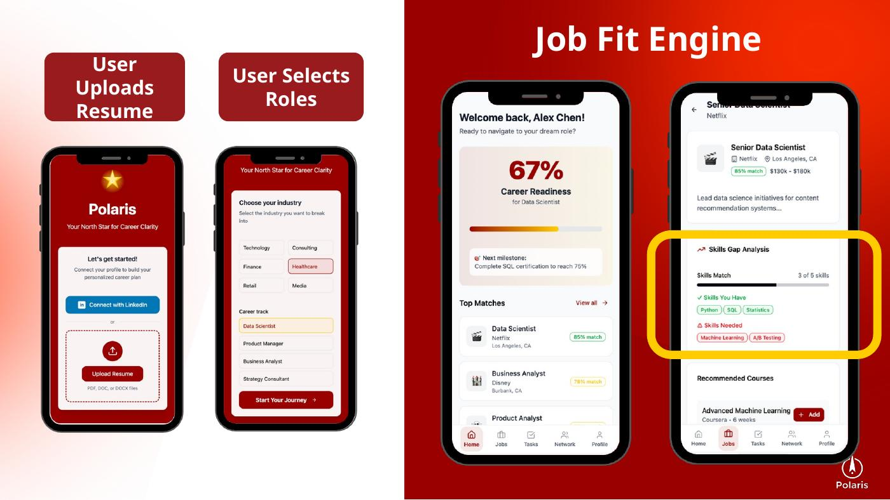
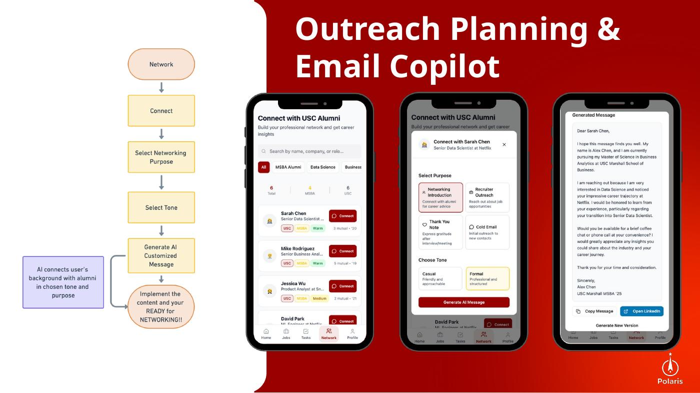
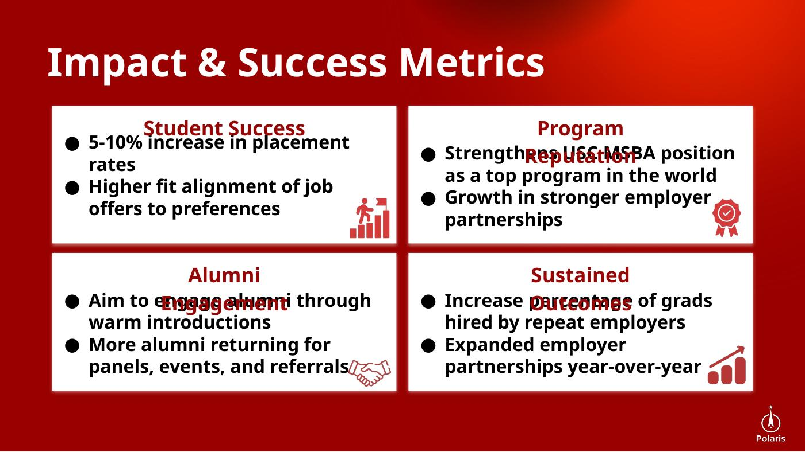

The product in one minute
Turn a resume into an actionable recruiting workflow. Polaris parses a student's background, scores job fit, surfaces skill gaps, maps relevant alumni, and drafts personalized outreach — connecting steps that are normally fragmented across multiple tools.
From pain points to features
Problem: unclear job fit
Students spend time screening roles without a consistent way to judge fit.
Feature: Job Fit Engine
Compare experience and skills against role requirements and expose gaps.
Problem: inefficient networking
Large alumni networks are valuable but difficult to navigate manually.
Feature: Outreach Mapping + Copilot
Prioritize relevant alumni and draft personalized messages.
What the user would actually see


The prototype makes the concept concrete: the user moves from profile/resume input to job fit and then to outreach, rather than receiving a generic chatbot response.
End-to-end journey
How success should be measured
A product like this should not be judged by generated emails alone. The measurement framework moves from adoption to action to actual career outcomes.

My contribution & scope
Business context / problem framing and the impact & success-metrics framework, alongside team ideation and presentation development. Polaris was a product concept and prototype, not a deployed production system.